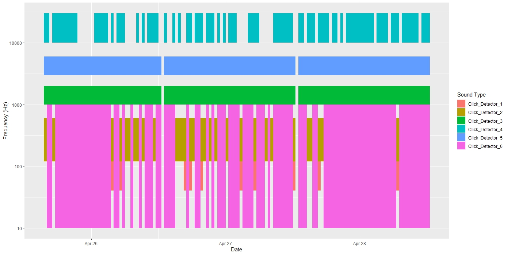

Biotic, Abiotic, and Anthropogenic Contributors to Soundscapes
Biotic, Abiotic, and Anthropogenic Contributors to Soundscapes: Development of an Open-Source Method for Data Integration & Visualization
Investigators:
Shannon Rankin, Southwest Fisheries Science Center, La Jolla, CA 92037
Taiki Sakai, Contractor with Ocean Associates for SWFSC, La Jolla, CA 92037
Anne Simonis, Contractor with Ocean Associates for SWFSC, La Jolla, CA 92037
Megan McKenna, [insert affiliation]
Background
There is increased awareness that the ocean soundscape provides valuable insight into the health of the marine environment, and the increase in passive acoustic monitoring provides expanded opportunities to integrate soundscape analysis into existing or emerging studies. With increased consideration of sustainable development related to offshore renewable energy, it is important that NOAA provides data products in a transparent and reproducible manner.
There are a number of analytical approaches to assessing the marine soundscape and there is ongoing effort to standardize these efforts. The National Center for Environmental Information (NCEI) hosts a growing archive of soundscape metrics, and while this data is freely available, scientists need tools to aggregate this data and integrate with other data products to provide context for studies for acoustic ecology (#fig-miksis, from Miksis-Olds, et al. 2018).
Southwest Fisheries Science Center has developed FOSSA (Free and Open Source Software for Acoustics), a series of interconnected software packages for systematic and efficient processing of passive acoustic data for cetacean population assessment. Currently FOSSA consists of three software packages written in R programming language and published on CRAN:PAMpal (Sakai 2023b), BANTER (Archer 2022), and PAMmisc (Sakai 2023a). PAMpal serves to extract acoustic data analyzed in PAMguard open source software (pamguard.org), provide measures of acoustic data, integrate acoustic detections with environmental data products (ERDDAP, Simmons 2020), and prepare data for downstream processing. The structured format of PAMpal provides a platform for integrating detection of marine mammal events with alternative data products, such as soundscape metrics, in an easy to use package that encourages replication of results and comparison of results from different studies to provide improved geographic and temporal analyses.
This report outlines the expansion of the FOSSA framework by creating PAMscapes, an open source software package written in R programming language that serves to integrate and visualize soundscape metrics with contributors to soundscape (including weather, AIS ship tracks, and acoustic detections of biological species). These functionalities and tutorials will be published on CRAN, allowing for adoptions across NOAA science centers and the global acoustics community.
Research Objectives and Results
Expand FOSSA by integrating data representing various contributors to the marine soundscape, including:
AIS ship tracks
Access to AIS ship track data is notoriously complicated and while there are several open source websites to access AIS data, developing an automated process to download appropriate data is difficult. Here we created a function that will identify the appropriate time and location (latitude/longitude) based on an existing user dataset and then download the appropriate AIS files from Marine Cadastre (https://marinecadastre.gov/). There are additional functions to subset AIS data to suit your regional needs, read AIS data into R, and match AIS data to an existing user dataset. These functions are part of the new PAMscapes R package (currently hosted on Github with intended publication to CRAN by the end of the calendar year 2024). A tutorial ‘AISWorkflow’ is provided on the PAMscapes Github repository.
Weather variables
Weather (wind, precipitation) can serve as significant contributors to the soundscape. The PAMpal function ‘matchEnvData’ pairs environmental data products from ERDDAP or HYCOM data servers; however, weather data are saved from models developed by the Global Forecasting System (https://rda.ucar.edu/datasets/ds084.1/). PAMscapes includes the ‘matchGFS’ function to access wind and precipitation variables from this server and match it to a user dataset.
Soundscape data products
There are a number of approaches to calculating soundscape metrics, and each of these methods creates somewhat different output. We developed functions that can read in soundscape metrics saved as csv files and containing XX variables, with the specific variable names YY.
Summary and Visualizations
Once data are merged, we created a number of common summaries and visualizations. the ‘addAISSummary’ summarized the raw AIS data (creating additional rows of data) to inform the presence, speed, and distance of ships to any point in the user dataset. PAMscapes readily creates time series plots of user selected variables as either line or heat map plots. The PAMscapes Tutorial provides additional guidance to personalize these plots. Since PAMscapes readily merges data with acoustic detection data processed in PAMpal, this allows for plotting a time series of the Acoustic Scene (see example, below).

Crowd-Sourced Soundscape Bibliography
Research on soundscapes is advancing rapidly, and we realized there was a need to create a crowd-sourced bibliography to assist other researchers keep up with advances in the field. To this end, we created an open source Soundscape bibliography on Zotero (https://www.zotero.org/groups/58164/soundscape), with additional information provided on Bioacoustics Stack Exchange (https://bioacoustics.stackexchange.com/questions/1375/is-there-a-central-repository-for-soundscape-literature).
Conclusions
The standardized framework provided by the Free and Open Source Software for Acoustics (FOSSA) allows for automation of functions to merge data from other sources (user defined or open source). Many of the functions developed here can stand alone independent of PAMpal; however, the easy assimilation of datasets with acoustic detection of marine mammals allows for automation of complex visualizations, such as the Acoustic Scene plot, with little effort or programming experience. Consideration of additional datasets and visualizations can be considered with little additional effort.
References
Archer, Frederick. 2023. "Banter: BioAcoustic eveNT classifiER." https://cran.r-project.org/web/packages/banter/index.html.
Sakai, Taiki. 2023a. “PAMmisc: Miscellaneous Functions for Passive Acoustic Analysis.” https://cran.r-project.org/web/packages/PAMmisc/index.html
Sakai, Taiki. 2023b. "PAMpal: Load and Process Passive Acoustic Data." https://cran.r-project.org/web/packages/PAMpal/index.html.
Simons, R.A. 2020. ERDDAP. NOAA/NMFS/SWFSC/ERD, Monterey, California, https://coastwatch.pfeg.noaa.gov/erddap.